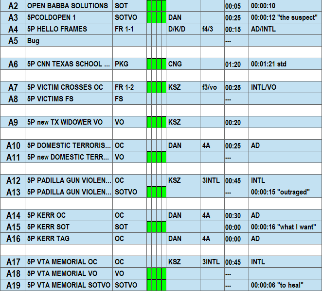
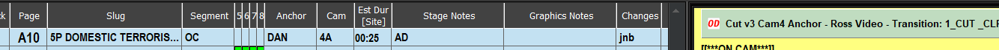
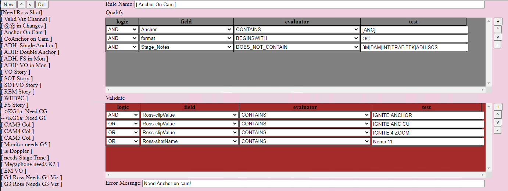
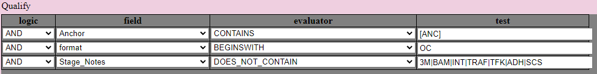
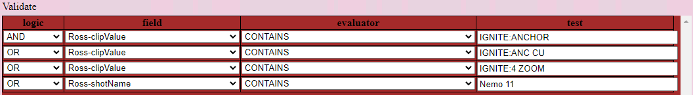
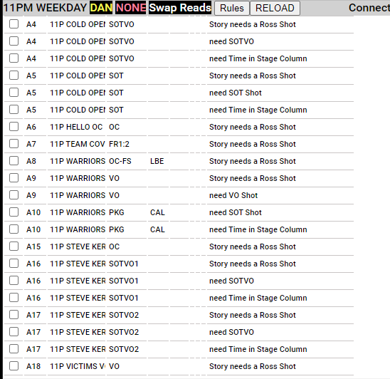

An essential part of daily newscast production is programming the newscast automation system, Overdrive. Television news strives to present the most current information on every story. This leads to stories that change and evolve right until they air.
Individual newscasts are a collection of stories organized into a rundown. Typically, (but not always) rundowns are linear, the show starts at the beginning and works through each element in sequence.
Sample Rundown:
Quick rundown breakdown
| Story # | Slug | Format | Description |
|---|---|---|---|
| A2 | OPEN BABBA SOLUTIONS | SOT | Sound on tape, take the show open full no other audio is open |
| A3 | 5PCOLDOPEN1 | SOTVO | Sound on Tape for 12 seconds, then DAN will read a script. |
| A4 | 5P HELLO FRAMES | FR 1-1 | Both Anchors in 1-1 boxes (COVID Protocol, they sit across the studio from each other). They introduce the show. |
| A5 | BUG | Add the Time and Temperature Bug | |
| A6 | 5P CNN TEXAS SCHOOL PKG | PKG | 5P CNN TEXAS SCHOOL PKG |
| A7 | 5P VICTIM CROSSES OC | FR 1-2 | Take KSZ (Anchor2) in 1-2 Boxes (little box, bigger box), See KSZ in left box (with her Mic), Video in Right Box (With low audio to hear natural sound). |
| A8 | 5P VICTIMS FS | FS | KSZ talks over Fullscreen graphic. |
| A9 | 5P new TX WIDOWER VO | VO | KSZ reads over Video, using her microphone and Natural Sound from the video. |
| A10 | 5P DOMESTIC TERRORISM OC | OC | DAN Reads On Camera |
| A11 | 5P DOMESTIC TERRORISM VO | VO | DAN reads over video, using his microphone and Natural Sound from the video. |
The Director airs the newscast and is entirely responsible for the technical execution of the show. Production duties revolve around two distinct aspects:
This solution focuses on enhancing show preparation accuracy and efficiency.
The coding process is 100% dependent on the director entering the correct Overdrive codes and ensuring the codes are updated as the show changes. In many shows there is an additional constraint of not being able to check the coding ahead of time. In those cases, the director must perform data entry with 100% accuracy.
For Example:
If the rundown indicates DAN OC, then the script should contain a code that places the Anchor On Camera.
The basic logic equates to if condition AND NOT condition THEN Display Error.
WebMOS was originally used to present real-time scripts to talent in an iPad Browser. WebMOS is a server that essentially converts a CMS XML stream to XML. All information that the CMS delivers is available to a browser via a WebMOS HTML.
One disadvantage of the Dalet CMS is that it does not provide MOS objects (Overdrive Codes) to WebMOS. The Dalet MOS protocol only supported delivering scripts. This problem was overcome by adding a post XML update SQL query. For every XML story update, WebMOS performs an SQL query requesting the Overdrive XML Objects directly from the CMS database. The query results are appended to individual stories and pushed to the clients.
This enables a Javascript based solution designed to validate newscast production codes in real-time.
Hard coding a series of rules is a straightforward process. However, it delegates the responsibility of maintaining the ruleset to those who understand the programming language. The real challenge is creating a rule-based system that any user can use in the browser.
Like this:
This page defines all the logic behind validating Overdrive codes. The primary logic is divided between the Qualifier and the Denominator.
The qualifier is a set of logic indicating a story type. In this example, the qualifier is a set of rules to determine if a story indicates ANCHOR on camera.
Logic Breakdown:
| Logic | Field | Evaluator | Test |
|---|---|---|---|
| Anchor | CONTAINS | [ANC] (Special Keyword that designates the Anchor Talent Initals) | |
| AND | format | BEGINSWITH | OC |
| AND | Stage_Notes | DOES_NOT_CONTAIN | 3M OR BAM OR INT OR TRAF OR TFK OR ADH OR SCS |
The logic can be a little confusing when you start mixing AND NOT OR statements, but it is logical. If each of the statements is true then the story is deemed to be an Anchor OnCam story.
The logic proceed to the Validate ruleset
If the validate logic evaluates True, then the appropriate coding exists. If the logic evaluates False, then an error message is displayed.
The logic breaks down like this:
| Logic | Field | Evaluator | Test |
|---|---|---|---|
| Ross-ClipValue | CONTAINS | IGNITE:ANCHOR | |
| OR | Ross-ClipValue | CONTAINS | IGNITE:ANC CU |
| OR | Ross-ClipValue | CONTAINS | IGNITE:4 ZOOM |
| OR | Ross-shotName | CONTAINS | Nemo 11 |
All fields are accessible via a dropdown in the field column, the logic is also selectable via a dropdown, and the test field is an input field. Once a rule is updated, the user presses the SAVE button which updates a JSON file on the server. Otherwise, the code is entirely managed in the browser. Once a change is made, the user refreshes the client and tests the error logic. Repeat as needed to create a functioning rule.
An uncoded rundown generates a raft of errors that look like this.
As the show changes, Checker errors update automatically. Shows changes are required to be brought to the director’s attention. Sometimes, they are not. Checker provides an advisory for the most common mistakes be they data entry or simple lapses in communication.